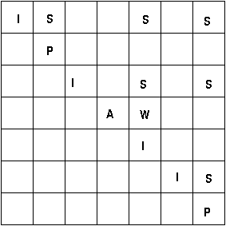

There are no epsilon or unit rules. First, we'll handle rules with terminals on the right, converting the CFG to the following:
I → id
A → =
L → (
R → )
P → ++
D → read
Next we'll handle the rules with more than one nonterminal on the right, converting the CFG above to the following:
W → A I
X → L R
Y → L Z
Z → I R
I → id
A → =
L → (
R → )
P → ++
D → read

Yes, the input x ++ y = z y ++ is in the language of the simple statement grammar. We know this because the grammar's start nonterminal, S, is in the upper-right corner of the grid.